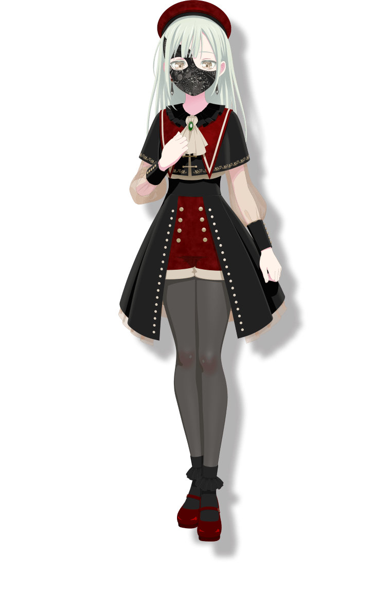
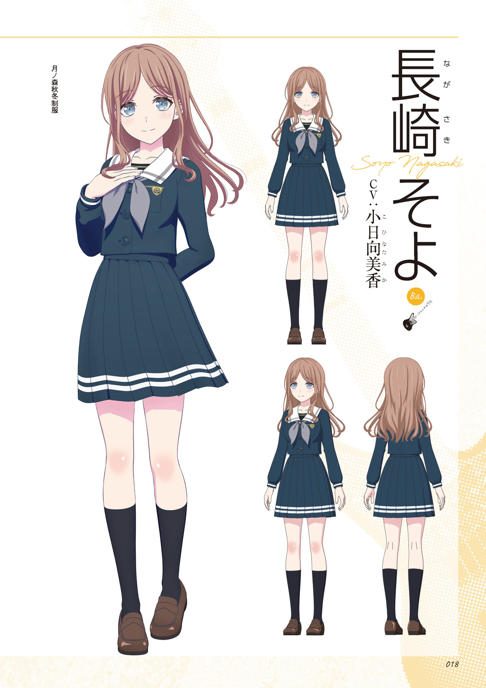
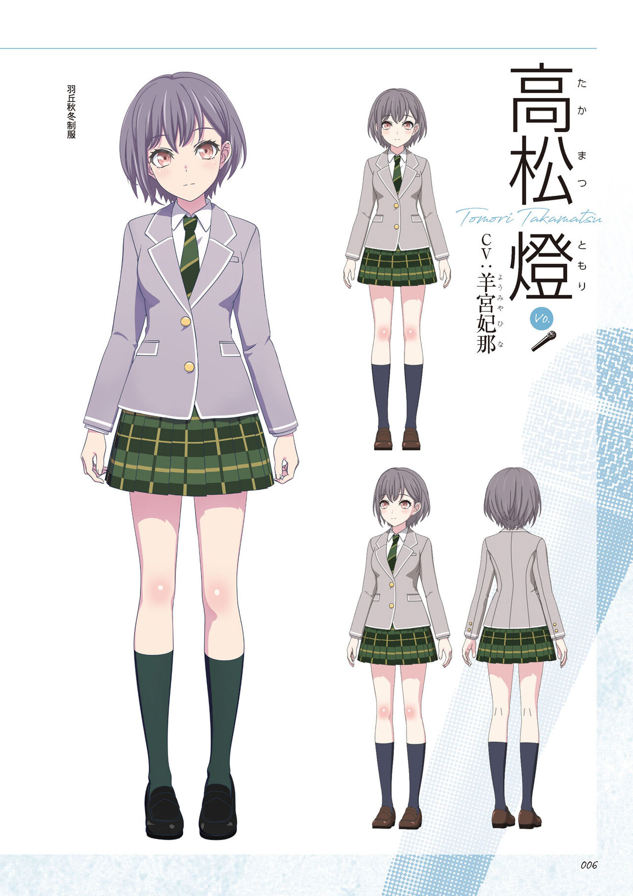
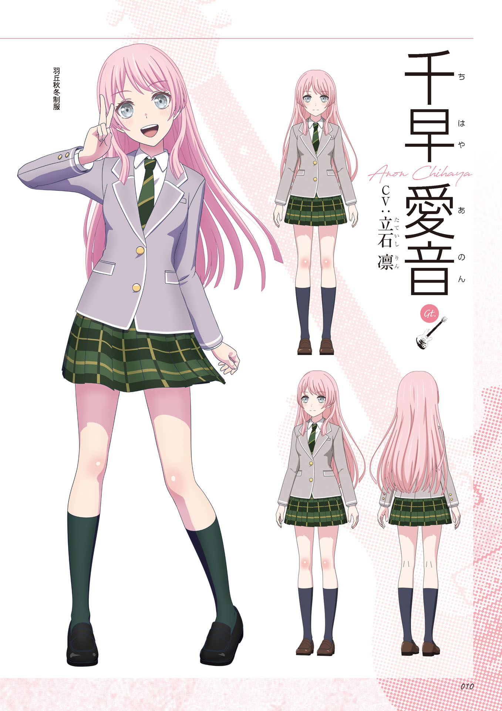
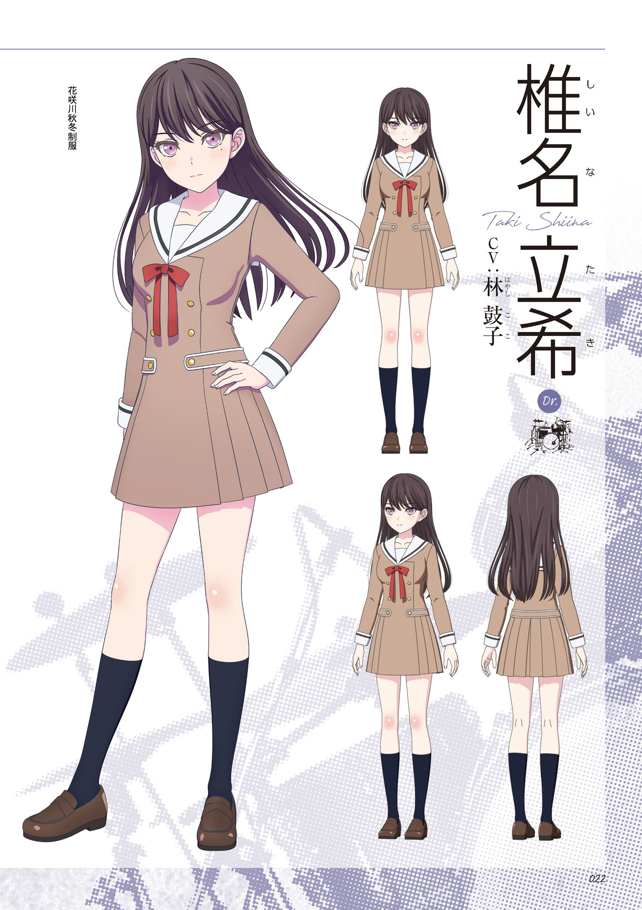
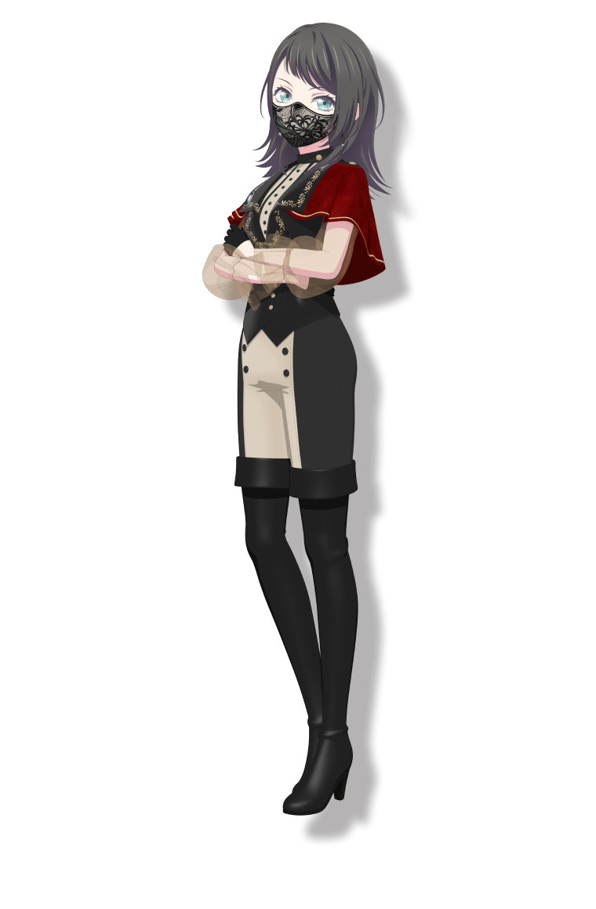
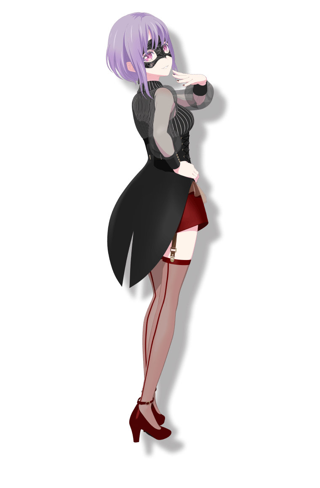
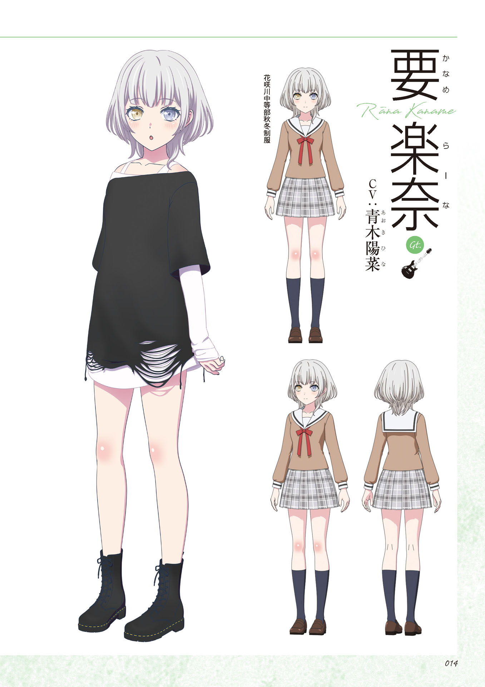
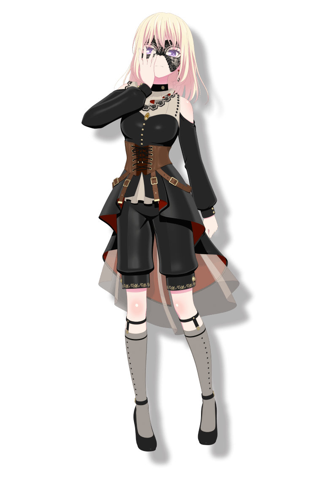
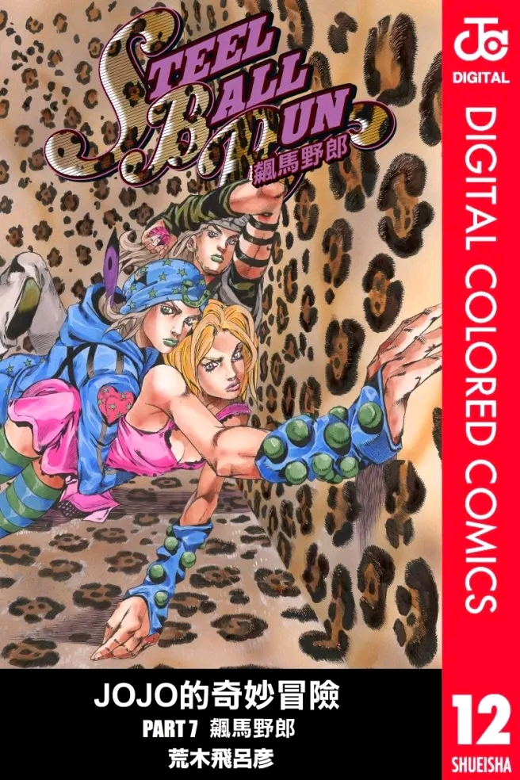

BanG Dream! It's MyGO!!!!!









|
||
|
これは、皆の、最後のも始まるの、ムスクです！！！！！！
|
音乐欣赏 |
视频欣赏 |
|
一起来组建属于你们的少女乐队吧！！！！！

MyGo!!!!! 是一个充满个性和活力的乐队，成员们都有着独特的性格和故事，她们通过音乐找到了彼此的联系和成长的方向~ 乐队风格偏向摇滚，充满了青春的气息！ 千早愛音（Chihaya Anon） 可爱的吉他手兼主唱！愛音是个活泼开朗的女孩子，总是充满正能量，喜欢用音乐传递快乐。她的笑容超级治愈，是乐队的阳光担当哦~ (｡♥‿♥｡) 高松燈（Takasaki Tomori） 乐队的主唱兼键盘手，性格稍微有点内向，但她的歌声却充满了力量和感情。燈是个温柔的女孩子，总是默默关心着大家，是乐队的“心灵支柱”呢~ (´｡• ᵕ •｡`)
酷酷的贝斯手！立希是个有点傲娇的女孩，外表看起来很冷淡，但其实内心非常重视队友。她的贝斯演奏超有魅力，是乐队的“酷girl”担当~ (￣▽￣*)ゞ 鼓手兼队长！そよ是个认真负责的女孩子，总是努力带领乐队前进。她的节奏感超强，打鼓时超级帅气，是乐队的“可靠大姐姐”哦~ (๑•̀ㅂ•́)و✧ |
||